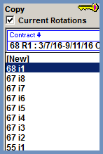
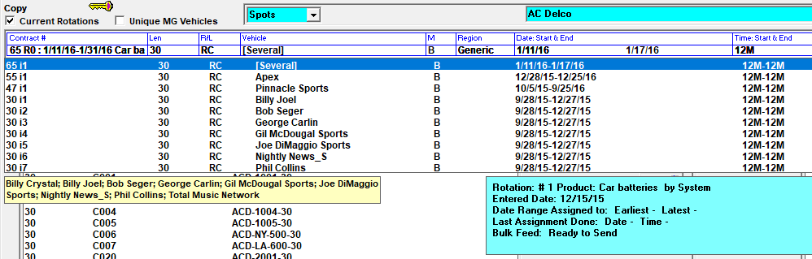
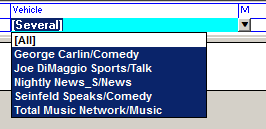

Rotation Dropdown
Previously entered rotations can be viewed from the rotation dropdown menu. To view a previously created rotation, click the rotation dropdown arrow in the upper right corner of the screen, directly to the right of the “C” (Comments) field. Clicking this arrow will expand the menu and show a list of rotations, as shown in the screenshot below.

Rotation numbers are viewable on the far left side of the rotation dropdown. Each rotation number has a letter “i” next to it and appears directly to the right of the contract number.

When the “Current Rotations” checkbox is checked, only current rotations are shown in the rotation dropdown. Uncheck the “Current Rotation” checkbox to see both current and expired rotations in the rotation dropdown list.
For the rotations listed in the rotation dropdown, the word “Several” will appear in the Vehicle field if the rotation was created and saved for more than one vehicle. (If the rotation was created for only one vehicle, that vehicle’s name will appear in the Vehicle field.)
To see the vehicles that are included as part of the selected rotation, hold the mouse cursor over a rotation in the rotation dropdown, and press and hold the right mouse button. A yellow tooltip that shows each vehicle will be displayed, with each vehicle separated by a semi-colon, as shown in the picture below.

Another way to see the vehicles that make up a “Several” vehicle rotation is to select the rotation in the rotation dropdown, then click the word “Several” that appears in the Vehicle field of the rotation header. The list of vehicles that make up the rotation will be shown directly underneath the Vehicle field in the rotation header area, as shown in the image below.

If you need to make a change to one of the vehicles in a “Several” vehicle rotation, create a new rotation and select that vehicle alone. The new rotation will supersede that vehicle’s instructions and leave the rotations for the other vehicles intact.
A rotation can be selected from the rotation dropdown menu by clicking it. Clicking it in this way will make the rotation information appear in the rotation header and rotation instructions area. Rotations can be edited after selecting them from the rotation dropdown. Most changes made to a rotation will result in a new rotation being created that has a higher rotation number than the previously entered rotations.